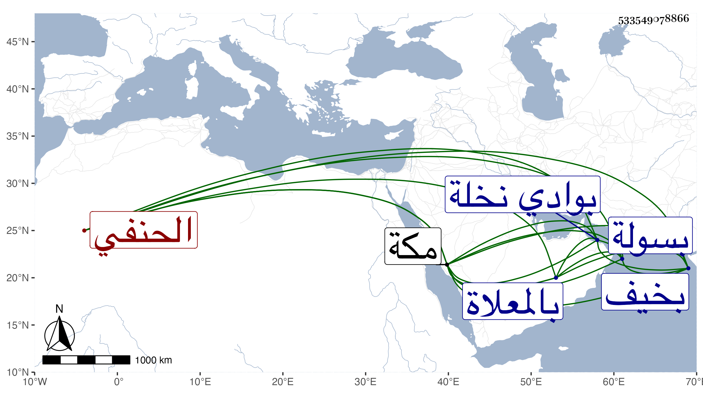

0902Sakhawi.DawLamic.ITO20230111-ara1.EIS1600.533549078866
Biography ID: 533549078866
174
محمد الجمال أبو الوفاء بن الضياء الحنفي أخو اللذين قبله . ولد في ربيع الثاني سنة ست وتسعين بمكة ، وكان قاضيا وإماما وخطيبا بسولة بوادي نخلة ، أجاز له في سنة خمس وثمانمائة فما بعدها ابن صديق والشهاب بن مثبت والفيروزابادي والجمال بن ظهيرة وآخرون . مات في يوم الجمعة حادي عشر ربيع الآخر سنة أربع وأربعين بخيف بني عمير من أعمال مكة وحمل إليها فدفن بالمعلاة . أرخه ابن فهد .
